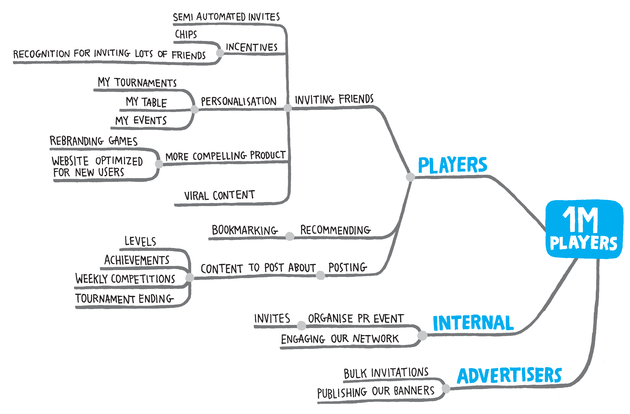
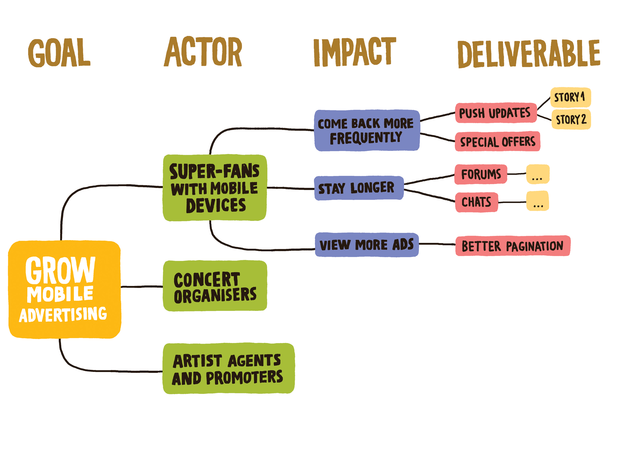
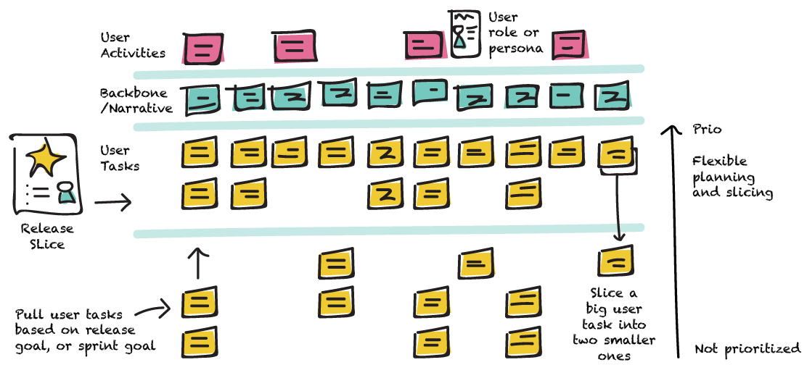

101 Impact Mapping
Juan Antonio Breña Moral
Who I am
|
|
Juan Antonio Breña Moral (45) Technical Product Owner for Shared Platform @ Atradius CIO Twitter | Github | Linkedin |
“Production is the best place on the Internet.”
“change is the only constant in life.”
― Heraclitus
“A good plan violently executed now is better than a perfect plan executed at some indefinite time in the future.”
― George S. Patton Jr.
Agenda
- Introduction
- Examples
- Impact Mapping in detail
- How to run a workshop?
- Takeaways
- Books
Introduction
What is Impact Mapping?Impact mapping is a strategic planning technique used to define and communicate the impact that a project or initiative will have on a specific audience or stakeholder group. The goal of impact mapping is to ensure that project goals and objectives are aligned with the needs and priorities of stakeholders and that the project is focused on achieving tangible, measurable results.
Introduction
Why use Impact Mapping?Impact mapping fits in the following scenarios:
- Strategic planning
- Defining quality
- Roadmap management
Examples

Examples 
Impact Mapping in detail 
Impact Mapping in detail
Impact Mapping in detail
Goal
- Why are we doing this? Business goal!
- Model for business value
Impact Mapping in detail
Goal / Notes:
- What does the organisation get out of the whole thing?
- SMART: Specific, Measurable, Actionoriented, Realistic and Timely
- Problem to be solved, not the solution. (Avoid design constraints)
- Not an impact on someone's behaviour
Impact Mapping in detail
Actors/Stakeholders
- Who will be impacted by this?
- Who can help to achieve the goal?
- Who can obstruct?
Impact Mapping in detail
Actors/Stakeholders / Notes:
- Primary actors, whose goals are fulfilled players of a gaming system
- Secondary actors, who provide services the fraud prevention team
- Off-stage actors, who have an interest regulators or senior decision-makers
Impact Mapping in detail
Impacts
- How will this impact them?
- How should their behaviour change?
- How can they help?
- How can they obstruct?
Impact Mapping in detail
Impacts / Notes:
- Behaviour changes:
◦ start doing something
◦ stop doing something
◦ do something differently
◦ prevent from doing something
- This is your sphere of influence
◦ Should include key assumptions
- Impacts are not product features
◦ Avoid listing software ideas
◦ Avoid implying solutions
◦ Focus on business activities
Impact Mapping in detail
Deliverables
- What can we do to cause an impact ?
Impact Mapping in detail
Deliverables / Notes:
- User stories, epics, tasks, product ideas
- This is your zone of control
◦ Should not include assumptions
- Options, not commitment
Impact Mapping in detail
Summary:

How to run a workshop?
In Remote
How to run a workshop?
In RemoteSplitting the teams in groups to increase the ideas and parallalize the analysis.
How to run a workshop?
- Step 1a: Determine the Actors: the “Who”
- Step 1b: Determine the Impacts: the “How”
- Step 1c: Determine Deliverables: the “What”
- Step 2: Find Alternatives
- Step 3: Identify Key Priorities
- Step 4: Earn or Learn (Think Lean Startup!)
- Step 5: Create User Stories>
How to run a workshop?
Although, you could discover several impacts in the workshop, the team need to priorize, at the end, the resources are limited.

How to run a workshop?
Measure the goals are a key part of the process.
Takeaways
- Impact mapping help us to discover new ideas to improve the impact in our Platform team
- The resoults was a valuable inputs to talk with our Stakeholders
- We discovered that we need a User Mapping to make visible release planning content to share with other teams
- We discovered that some goals, doesn´t have clear metrics. Why do do X? Is it clear the benefit?
Takeaways
Example from Jeff Patton
Books
Concept: Impact Mapping
Books
Concept: LEAN
Books
Concept: DORA Metrics
Books

Concept: Extremme programming
Books

Concept: Story mapping
Books
Concept: Acceptance tests
Books

Concept: Event Storming